Key Takeaways
- Operating System Version (operatingSystemVersion) provides more effective device targeting based on the OS version.
- Administrators can use comparison operators such as Equals, Not equals, Greater than, Greater than or equal to, less than, and less than or equal to.
- The capability is useful for Windows version/build-based policy deployments and phased rollouts.
- Assignment Filters can be used alongside existing device or user group assignments to provide an additional layer of targeting.
In this post we are discussing Configure Operating System Version Based Assignment Filters in Microsoft Intune. Microsoft Intune has introduced the Operating System Version (operatingSystemVersion) property for Assignment Filters, providing administrators with a more flexible way to target devices based on their operating system version and build. This capability is particularly useful in Windows environments where organizations need to control policy deployments based on specific OS versions or builds.
Table of Contents
Configure Operating System Version Based Assignment Filters in Microsoft Intune
With this capability, administrators can create filter rules that evaluate the operating system version of managed devices and use comparison operators to determine which devices should be included or excluded from an assignment. This provides more granular targeting than assigning a policy only to a device or user group. The operatingSystemVersion property is especially useful for organizations managing different Windows versions during update rollouts.
Open Assignment Filters for Creating New Assignment Filters Rules
If an organization already has OS-version-based Assignment Filters, the existing configuration can also be reviewed and updated where appropriate. Therefore, administrators don’t always need to create a new filter for every scenario. So here in this post showing a new assignment filter steps and how to set rules to the Existing configuration. So first sign in to the MS Intune admin center and navigate to Tenant administration from the left-hand navigation menu. Under the Assignment filters section.
- Tenant administration> Assignment filters
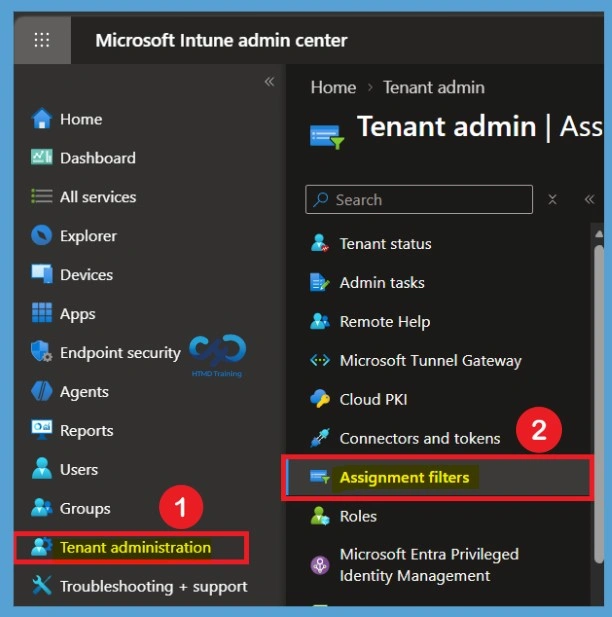
From the Assignment Filters page, select Create to start creating a new filter. For this configuration, we will create a new filter that uses the Operating System Version property to identify devices based on their Windows operating system version.
- After selecting Create, choose the option for creating a filter for Managed devices.
- Assignment filters> Create> Managed Devices
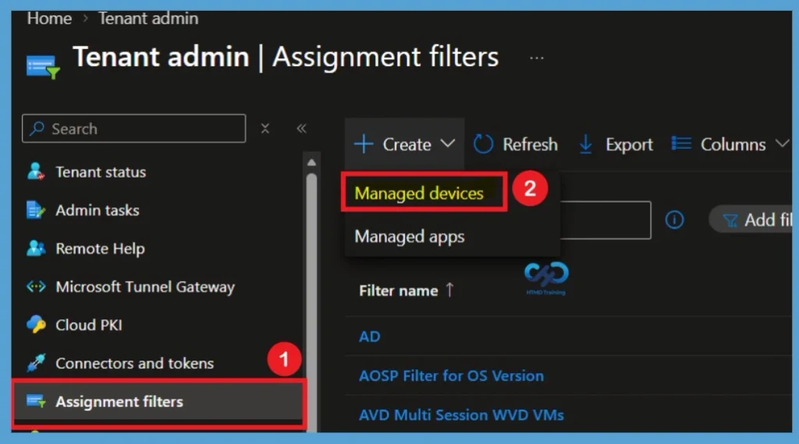
Configure the Basics
On the Basics page, provide a name for the Assignment Filter so that administrators can easily identify its purpose later. For example, you can use Windows OS Version Filter as the filter name. You can also provide a description and under Platform, select Windows 10 and later. After entering the required information, select Next to continue to the Rules section.
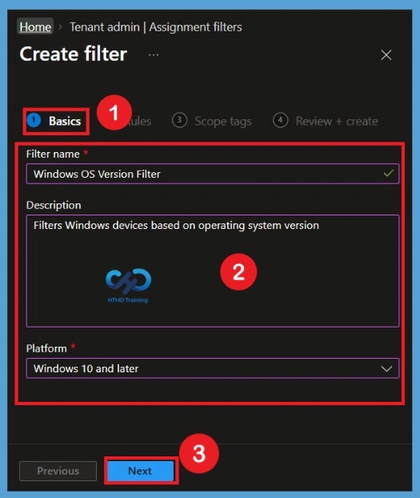
Rules – Select Operating System Version
On the Rules page, select Add expression to create the filtering condition. In the Property field, select Operating System Version (operatingSystemVersion). This property allows the Assignment Filter to evaluate the operating system version reported by the managed Windows device and its now (Operating system version) property in assignment filters is generally available.
| Property Values |
|---|
| deviceName (Device name) |
| manufacturer (Manufacturer) |
| model (Model) |
| deviceCategory (Device category) |
| osVersion (OS version) |
| operatingSystemVersion (Operating System version) |
| deviceOwnership (Ownership) |
| enrollmentProfileName (Enrollment profile name) |
| deviceTrustType (Microsoft Entra Join Type) |
| operatingSystemSKU (Operating System SKU) |
| cpuArchitecture (CPU Architecture) |
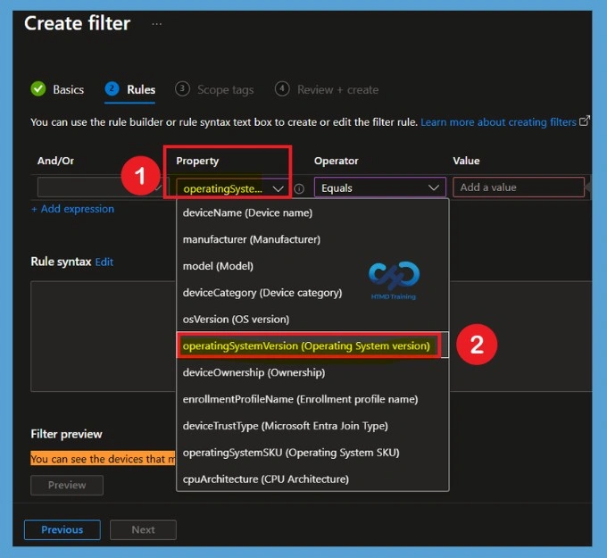
Operator Settings in the Rules
Microsoft Intune provides several comparison operators, including Equals, NotEquals, GreaterThan, LessThan, GreaterThanOrEquals, and Less than or equals. These operators allow administrators to define how the device operating system version should be evaluated when the filter is processed. Here in this example, I selected the Equals. Selecting Equals allows you to target devices matching a specific operating system version.
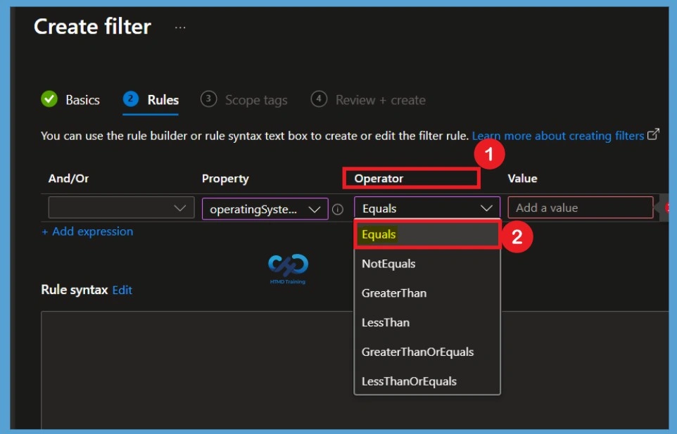
Add a Value
In the value section, enter the Windows operating system version or build number that you want the Assignment Filter to evaluate. Here for an example, I use the value as (device.operatingSystemVersion -ge 10.0.22000.1000). You can add the appropriate value for your Assignment Filters. Also, the value shows in the Rule syntax, if anything add mistakenly you can edit from Rule syntax.
- Click on the Next for Scope Tags.
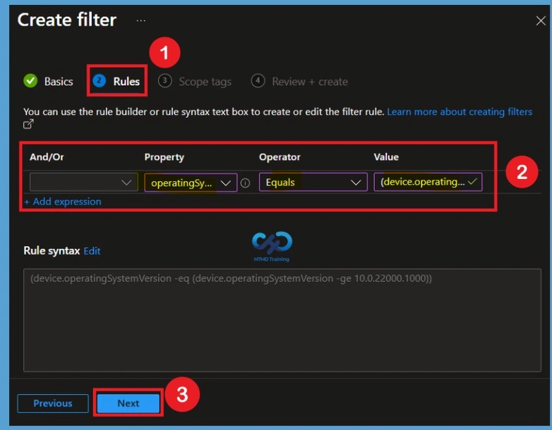
On the Scope tags page, you can select the appropriate scope tag for the Assignment Filter. If no additional scope tag is required, you can keep the default Default scope tag selected and proceed to the next step. Here I selected London scopes for an example. After reviewing the scope tag configuration, select Next to continue to the Review + create page.
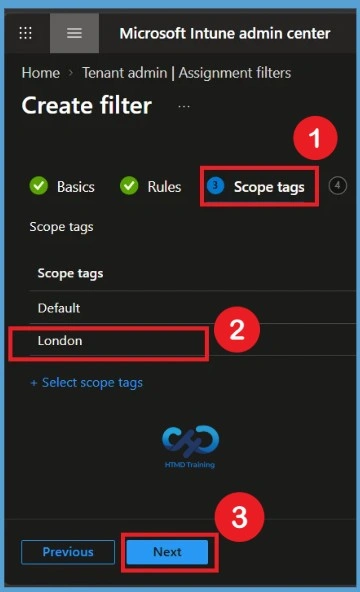
Review + Create
On the Review + create page, carefully review all the configuration settings before creating the Assignment Filter. Verify the filter name, platform, Operating System Version (operatingSystemVersion) property, selected operator, and version. Once you have confirmed that the configuration is correct, select Create.
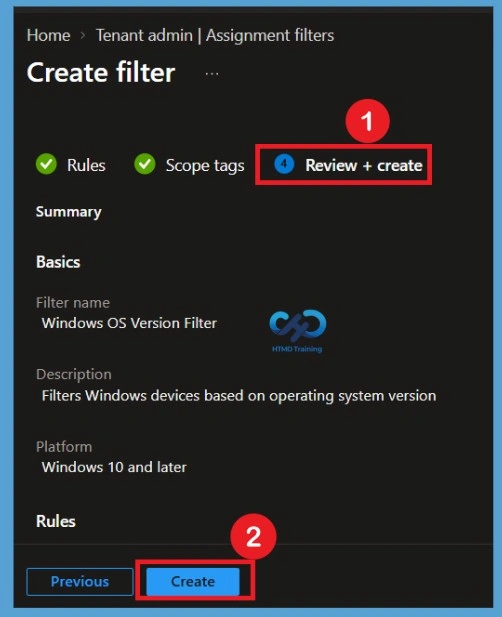
Using an Existing Assignment Filter
If you already have an existing OS-version-based Assignment Filter, you don’t necessarily need to create a new filter. You can edit the existing filter and configure the Operating System Version (operatingSystemVersion) property according to your requirements. Here in the assignment filters tab, for an example I selected an existing Assignment filter for Windows 11 23H2.
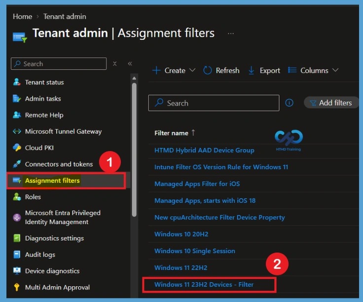
When you click on the Windows 11 23H2 assignment filter now it opens the Properties tab. Here you can see that many fields can be edited such as basics, Rules, Scopes. We need to select the Edit option for the Rules.
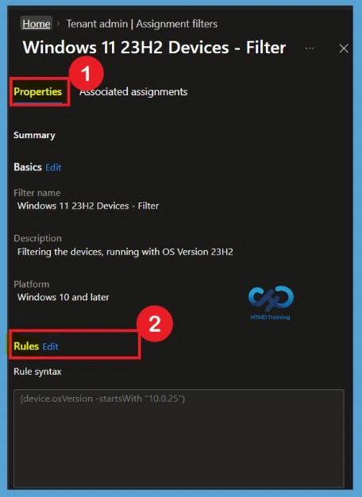
Edit Rules for the Existing Assignment Filter
Now you get the Existing Assignment Filter rule page, here you can edit the Property, operator, value just like you did for the new Assignment filter. You can review the existing filter and configure its rule using the Operating System Version (operatingSystemVersion) property according to your requirement. This allows you to apply the new OS version filtering capability to an existing filter rather than creating a separate filter when an appropriate filter is already available.
Before modifying an existing filter, review where the filter is currently assigned. Any changes to the filter rule may affect the devices targeted by those existing assignments. After change the Rules you can click on the Review+ save option.
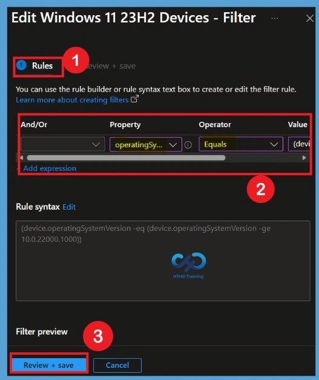
Need Further Assistance or Have Technical Questions?
Join the LinkedIn Page and Telegram group to get the latest step-by-step guides and news updates. Join our Meetup Page to participate in User group meetings. Also, join the WhatsApp Community and the Whatsapp channel to get the latest news on Microsoft Technologies. We are there on Reddit as well.
Author
Anoop C Nair is Workplace Technology solution architect with 25+ years of experience in global enterprise organizations such as JP Morgan, Capgemini, etc. He is Microsoft Certified Trainer. Microsoft MVP from 2015 onwards for consecutive 11 years! He also conducts Intune and modern workplace tech training for enterprise organizations. He is Blogger, Speaker, and Founder of HTMD Community and HTMD Conference. His focus is on Device Management technologies such as Intune, Windows, Cloud PC. He writes about technologies like Intune, SCCM, Windows, Cloud PC, Windows, Entra, Microsoft Security.